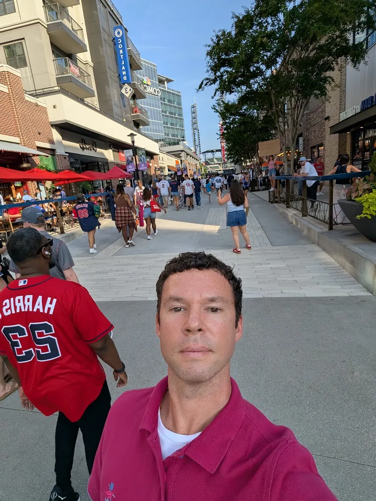

Away from the desk · Personal photos
Baseball in Atlanta
A day around the ballpark and the energy of Atlanta's game-day crowds.

Away from the desk · Personal photos
A day around the ballpark and the energy of Atlanta's game-day crowds.
